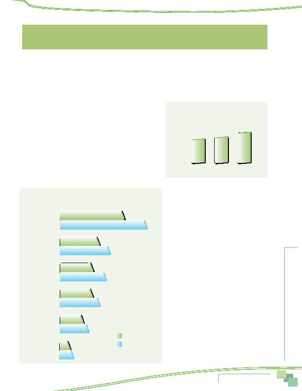

MWCOG-Comm
uter Conn
ecti
on
s-- 2010 State o
f th
e Comm
ute Report
4 1
The SOC survey also included questions on commute assistance services and benefits that an employer might provide
to employees. Respondents were asked about two types of services:
n
Alternative mode incentives and support services
n
Parking facilities and services
This section presents results regarding respondents' availability of and use of these services in 2010. Results also are
presented for some questions from the 2007 and 2004 SOC surveys.
INCENTIVES/SUPPORT SERVICES
More than six in ten (61%) respondents said their employer offered one
or more incentives or support services (Figure 36). This is higher than the
percentages of respondents who reported having access to these services in
2007 (54%) and 2004 (53%).
Individual Incentives/Support Services Offered
The percentages for individual services offered are shown in Figure 37.
Four in ten (39%) of respondents said their employers offered one or two
of these services. An additional 23% said their employers offered three or
more services.
The most commonly offered services were
SmarTrip/other subsidies for transit/vanpool, available
to 45% of respondents, and information on com-
muter transportation options, available to 26% of
respondents. Nearly a quarter (24%) of respondents
said their employers here offered services for bikers
and walkers, 21% were offered preferential parking
for vanpools and carpools, 14% were offered GRH
services, and only seven percent were offered carpool
subsidies.
As shown in the figure, availability of transit/
vanpool subsidies has grown substantially, from 33%
to 45% since 2007. Availability of other services also
appears to have risen since 2007.
Incentives/Support Services Offered by
Employer Type
Respondents who worked for federal agencies
were most likely to have incentives/support services
available at their worksites; 89% of federal workers
said they had at least one of these services, compared
with 64% of respondents who worked for non-profit
organizations. Respondents who worked for private
employers and state/local agencies were least likely
to have incentives/support services; only about
half of respondents who worked for these types of
employeres had access to commuter benefit services.
Figure 37--Alternative Mode Incentives and Support Services
Offered by Employers
2007 and 2010
2007
2010
Transit/
vanpool subsidy
Info on
travel options
Bicycling/
walking services
Preferential parking
for CP/VP
Guaranteed
Ride Home
Carpool subsidy
33%
45%
20%
26%
17%
24%
16%
21%
12%
14%
5%
7%
Figure 36
Employer Offers any Incentive/Support Services
2004, 2007, 2010
2004
2007
2010
53%
54%
61%
Employer-Provided
Commuter Assistance Services
EMPLOYER-PROVIDED COMMUTER ASSISTANCE SERVICES